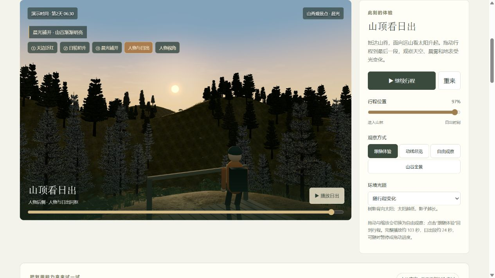

自然环境组合初版
2026-09-14 保存。包含林间、草甸、岩地三种组合及地表、灌木、石块。保留当时的树冠与日出光照。
103 个文件，约 14.1 MiB。入口：低坡营地 · 97% 行程 · 06:30 晨光。
可操作的历史记录
每个历史版保存独立代码、素材和观察条件。可以旋转、播放；刷新回到该版本的归档场景。
2026-09-14 保存。包含林间、草甸、岩地三种组合及地表、灌木、石块。保留当时的树冠与日出光照。
103 个文件，约 14.1 MiB。入口：低坡营地 · 97% 行程 · 06:30 晨光。
减少近景针叶碎亮点，修正透明边缘过滤，调整树冠受光与草地色调。保留本轮实际效果供下一轮比较。
与 V001 同布局、同日出观察点。
同一场地比较 6 营位与 4 营位，调整接待数量与间距目标，体验步行路线并保存评审理由。
123 个文件，约 14.8 MiB。固定入口：方案 B · 4 组 / 4 m · 15:00 总览。
改善近景针叶受光的碎亮点、远树过黑的轮廓，并调整草丛颜色与高度。与 V001 使用相同布局、机位、光照比较。
开发版会变化；V001—V003 的文件保持不变。
归档的是当前已生成场景，未应用的布局草稿单独记录。历史版使用独立的本机存档名称，不会覆盖开发版方案。
此处为本地可运行版本；浏览器和显卡差异仍可能影响渲染，不是视频录制或逐像素一致性承诺。


仍需改进：树形重复、近远树冠色差和远处地表重复感。当前是可交互的程序化场景。